Photos
2019 Technovation Photos
Check out this shared Google Drive folder for photos from this fall's installment of Technovation and the 2019 Technovation Showcase!
Forms
2020 Technovation Interest Form
Enter your contact information here to be notified when registration opens for the 2020 installment of Technovation!
Participant Post-Survey
Thank you for participating in this year's session of Technovation − we hope you enjoyed the journey, and learned along the way!
Parent Post-Survey
Thank you for supporting your coder through this year's session of Technovation − let us know how we can improve next year!
Resources
Fall 2019 Technovation Syllabus
CodeHS
Overview: Introduction to Python with Tracy the Turtle
In-Depth: Introduction to Python with Tracy the Turtle
Turtle Graphics Documentation
Turtle Colors
Tracy Cheat Sheet
Weekly Updates
Thank You
From the bottom of our hearts, the Technovation team thanks you for a successful 2019 session
Without the enthusiasm of our coders, the encouragement of their parents, the passion of our MSU mentors, and the generosity of our facilitators, the fall 2019 installment of Technovation would not have been possible − if you're reading this, you are the reason our program was a success. Thank you again!
As promised, photos from last fall's installment of Technovation can be found here. Additionally, we'd appreciate if you could fill out our parent post-survey so we can take your suggestions to heart when planning Technovation next year. We value your feedback!
Looking for another in-person program similar to Technovation? The Grand Ledge Area District Library is offering a brand-new "Code Club!" on Wednesday evenings from 6-7pm beginning January 15th. This program is open to students aged 8-18, requires no prior coding knowledge, and will guide them to create "websites, video games, apps, animations, and more." Students will even have the opportunity to earn Boy Scout, Cub Scout, and Girl Scout merit badges through their participation!
If your coder is hoping to extend their adventure through computing in the new year, we encourage them check out the various summer programs and outreach programs offered by the Michigan State College of Engineering, along with the numerous free programs offered on CodeHS, Codecademy and Khan Academy. For an extensive listing of resources for continued learning, check out our Resources page.
Finally, we've created an interest form in preparation for the 2020 installment of Technovation − if your student enjoyed their journey through functions, loops, and variables this fall, enter your contact information to be notified when registration opens for next fall's session. Please share this form with any others you think may be interested in Technovation!
We wish our coders, parents, MSU mentors, and facilitators alike a wonderful new year, filled with new opportunities.
Happy 2020!
-The Technovation Team
Week 9 (11.23)
A grand finale
Now this is not the end. It is not even the beginning of the end. But it is, perhaps, the end of the beginning.
- Winston Churchill
Saturday's Technovation Showcase marked only the end of the beginning for our students − their final projects were clear evidence of the bright futures awaiting each of them. It's been a pleasure seeing their growth as problem-solvers, communicators, teammmates, leaders, partners, and thinkers over the course of the past nine weeks − their energy and enthusiasm have made Technovation 2019 an absolute joy.
Coding is hard − if it were easy, everybody would do it. Just as Steph Curry and Draymond Green have to work hard and practice to play at the top of the NBA, computer scientists have to bring their A-game every day to push through complexity, think creatively, and learn constantly to keep improving. Our students lived up to this challenge week in and week out, and the results speak for themselves. We couldn't be more proud of their work!


Slides with a link to each group's project can be found at the link here or in the embedded player below; alternatively, students may access their final projects by logging into their CodeHS account. The content from Technovation 2019 will remain available to students through their CodeHS account should they want to review it or complete the exercises they were unable to finish.
If your student is hoping extend their adventure through computing now that Technovation is over, we encourage them to check out the other free programs offered on CodeHS, along with those offered by Codecademy and Khan Academy. For an extensive listing of resources for continued learning, check out this link. In addition, keep an eye out for the many summer programs offered by the Michigan State College of Engineering, and consider enrolling your student for Spartan Girls Who Code in the future (registration for Spring 2020 is now closed).
We hope your student had a blast with us this fall and learned along the way − as mentors and program facilitators, we sure did! In order to help us improve for next year's program, we'd appreciate it if you took 2 minutes to fill out our parent survey here. If your student did not have the chance to submit the student survey during class, we encourage them to fill out the student survey here. As a reward for your feedback, we've placed the link to all of this year's photos on the parent survey post-submission screen! If you have already submitted the survey, email us and we will foward you the link.
Last but certainly not least, on behalf of the Capital Area District Libraries and Michigan State University College of Engineering, we'd like to thank all of those who made Technovation 2019 possible.
From the students who arrived curious and open-minded each week to the parents who entrusted their children to the program, we thank you.
From Dr. Laura Dillon to Teresa Isela Vandersloot to Chris Breznau and all of the Michigan State faculty who contributed their time and experience to help make Technovation a success, we thank you.
From Courtney Tang to Jill Abood to Sean Lyons and all of the CADL staff who invested their time in promoting, supporting, and delivering Technovation, we thank you.
Finally, to the student mentors who combined their passion for computing with their desire to give back and spent their Saturday mornings working with aspiring computer scientists week in and week out, we thank you.
The whole of Technovation is greater than the sum of its parts, and we look forward to seeing the lasting impact it leaves on students, parents, mentors, and facilitators alike.
Until next year, we wish you all the best.
-The Technovation Team
Week 8 (11.16)
The final countdown
Saturday's mood was bittersweet for students and mentors alike − while it marked the final class of the 2019 session of Technovation, it also showed how far each and every one of our programmers have come over the past 8 weeks. Continuing to work in teams, students wrapped up their final projects, making use of all the commands and problem-solving strategies they've learned this fall. With only high-level guidance from mentors, students made use of functions, loops, and user input to write efficient, modular, and flexible code, yielding beautiful drawings as output!
Once each team reached a satisfactory stopping point, groups took turns presenting their work to the rest of the class, building their confidence and public speaking skills before next week's Technovation Showcase. We can't wait for them to show off what they've put together − be prepared to be impressed!
If you missed last week's update, we'd like to remind you that all families of students are invited to attend the Technovation Showcase on Saturday, 11/23, from 10am to 12pm where students will be presenting their final projects and explaining the challenges they overcame while creating them. Following presentations and a few remarks from the Technovation team, we'll celebrate the conclusion of this year's program with a pizza luncheon.
If you plan to attend, please let us know by filling out this RSVP form − there is no cost to attend, but we want to be sure we order enough pizza.
We hope you'll join us to see the results of every student's hard work and each team's collaboration!
In addition to finalizing and presenting projects, students filled out a post-survey evaluating their experience at Technovation this fall; if your student was absent this week, we encourage them to fill out the student survey here. Their feedback is extremely valuable as we continue to improve subsequent offerings of Technovation.
By the same token, we value your feedback as a parent − we'd love to hear your thoughts regarding this year's session of Technovation through our parent survey here. How was the registration process? How were our communications? How did your student feel about the course? Let us know through the link above!
We look forward to seeing you and your students at Saturday's Technovation Showcase − until then, have a wonderful week!
-The Technovation Team
Week 7 (11.9)
Creativity and collaboration
With the end of our Fall 2019 session of Technovation in sight, students brought their imagination to life in an incredibly wide variety of final projects! From rainbow cookies to a rainbow flower, pixelated cartoon characters to a city skyline, a basketball court to a famous statue, and animated text-art to an interactive, user-customizeable Etch-A-Sketch-like canvas, students poured their hearts into their work this week. It's amazing how fast time flies when the group is having fun − it felt as though our two hours together passed in the blink of an eye!
On that note, we'd like to remind you that all families of students are invited to attend the Technovation Showcase on Saturday, 11/23, from 10am to 12pm where students will be presenting their final projects and explaining the challenges they overcame while creating them. Be prepared to be impressed; students have come a long way in the past 7 weeks, and their final projects are sure to show it! Following presentations and a few remarks from the Technovation team, we'll celebrate the conclusion of this year's program with a pizza luncheon.
If you plan to attend, please let us know by filling out this RSVP form − there is no cost to attend, but we want to be sure we order enough pizza.
Week 7 brought no new lessons or spotlights − the metaphorical toolbox already has plenty to choose from. At this point, it's just a matter of using the right ones to build a masterpiece!
With the support of their peers and guidance of their mentors, students had no trouble doing exactly that.
Next week, students will continue to collaborate on their final projects, applying all they've learned over the course of Technovation to create with code. Given all they were able to accomplish during this week's session, we can't wait to see what they add next week to show off at the Technovation Showcase!
As always, we encourage students to try a handful of the challenge activities posted on CodeHS; they should be able to access their account and all associated Technovation materials from any internet-connected computer. No new exercises have been posted this week; however, unfinished exercises from weeks past are a great resource to review the fundamentals students will need to apply as they create their final projects. For reference, a Tracy command cheat-sheet can be found here.
Stay warm through our early start to winter, and we'll see you soon for Week 8!
-The Technovation Team
Week 6 (11.2)
Trick or code!
Week 6 featured no tricks, but plenty of treats − students brought their A-game yet again to conquer a series of review challenges emphasizing the use of variables, user input, functions, loops, and artistic effects to draw complex images more efficiently. Thursday's hunt for candy must've been a success, as the group energy level was high!
Students put their new programming knowledge to work in order to draw a stack of pancakes to a variable height specified by the user, draw a set of balloons of variable size and color specified by the user, and draw a set of books of variable number, height, width, spacing, and color specified by the user. To appreciate the power and flexibility of these programs, see them in action by clicking on the images below!
For this week's spotlight, students heard from MSU alumnus and current Golden State Warriors player Draymond Green. Draymond reminded us all that
"... hard work beats talent when talent fails to work hard"
both on the court and in the classroom − when it comes to programming, dedication and deliberate practice is essential, just as in basketball. Hear the rest of what Draymond has to say below!
Next, students formed teams to brainstorm final projects to create and present at the Technovation Showcase, thinking outside of the box for ways to combine loops, functions, variables, and user input to make a masterpiece of their own design. Mentors created their own example final projects and shared the details of how they went about programming them to get students thinking about how they might break down their problem and chunk it piece by piece − as a result, students left with a solid plan of attack to start on next week!
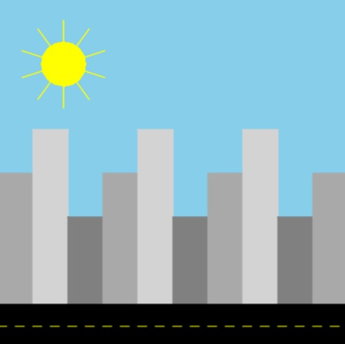
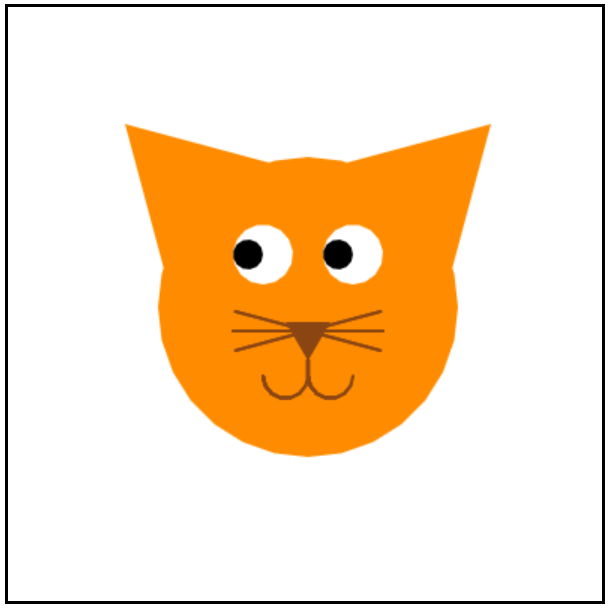
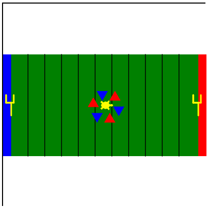
Christmas Tree
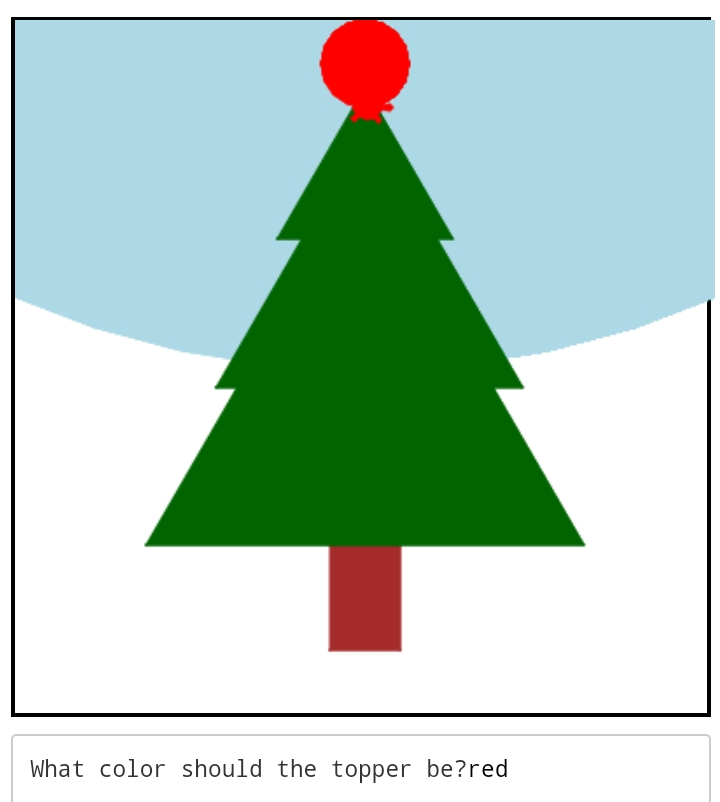
Pixel Art
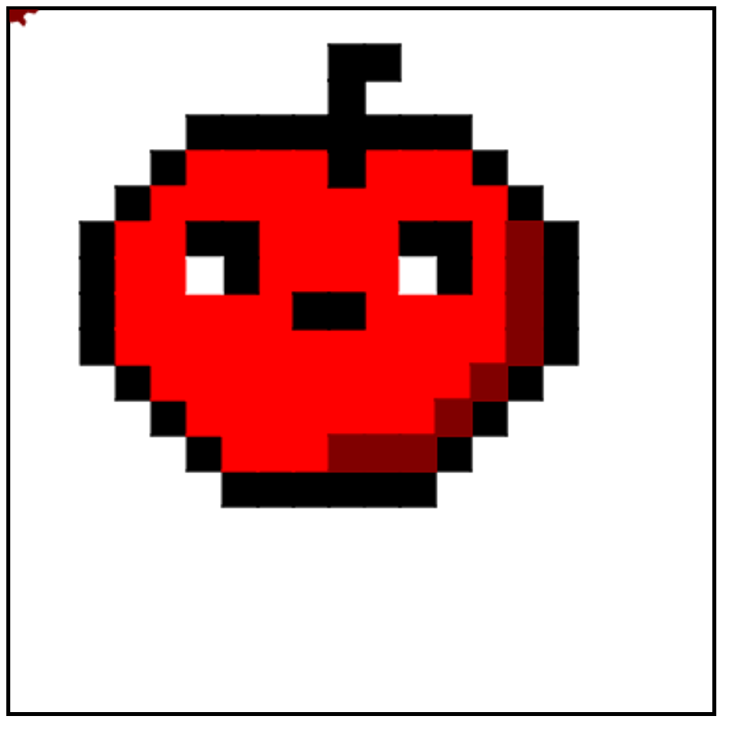
Soccer
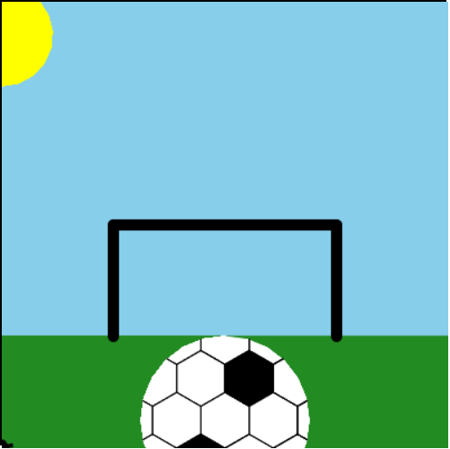
Over the next two weeks (Weeks 7 & 8), students will continue to collaborate on their final projects, applying all they've learned over the first 6 weeks of Technovation to create with code. Their hard work will culminate on Week 9, where they'll have the opportunity to present their projects at the Technovation Showcase!
Families of participants are encouraged to attend the Technovation Showcase from 10am-12pm on Saturday, 11/23 (the final day of class) where students will be presenting capstone projects which demonstrate the programming skills they've developed in Technovation. Following presentations, students and their families will be able to socialize with mentors, other students, and other families over a pizza luncheon.
We will be sending out more details regarding the Technovation Showcase shortly. In the meantime, block your calendars from 10am-12pm on Saturday, 11/23.
As usual, we encourage students to try a handful of the challenge activities posted on CodeHS; they should be able to access their account and all associated Technovation materials from any internet-connected computer. If they'd like to review what we covered on Saturday, the slides can be found here, and a Tracy command cheat-sheet can be found here!
Enjoy the extra hour of sleep this weekend, and we'll see you for Week 7 next Saturday!
-The Technovation Team
Week 5 (10.26)
Custom creations
This week, students took their programming skills to a whole new level, incorporating user input and variables to customize their creations and generate tailor-made drawings fresh on-demand!
Before diving into this week's lesson, students heard from Robin Hunicke, a video game designer who uses code every day to create the graphics, synchronize the music, and orchestrate the storylines behind the video games she creates. Robin's story goes to show how a career in computer science is not just for mathematically-minded, logic-loving, or function-focused problem solvers, but for creative innovators, too − as Robin herself puts it,
...the great thing about making a video game is that it encompasses just about every creative activity that you can imagine!
Hear the rest of what Robin has to say in the video below!
After watching this week's spotlight featuring Robin and discusssing how they hope to get "creative with code" some day, students learned about variables and user input in Python before jumping into a hands-on walkthrough in which they applied these concepts.
Variables are named locations in the memory of a computer which store a value, and user input can be leveraged to set the values stored in variables − as an analogy, variables can be thought of as "cubbies" within a computer which store a number or string of text, while user input can be thought of as one way to store particular numbers or strings of text within each cubby. Together, variables and user input enable flexibility in a program, as specific numbers or strings of text may be replaced by a variable whose stored value may vary over the course of a program's execution.
Armed with their newfound knowledge, students worked to programmatically draw a set of ice cream cones whose scoop and cone colors could be customized using variables and user input in an incredibly successful walkthrough − as always, we were blown away by the creativity and imagination of our students!
Working incrementally, they first used functions to draw a "single scoop," then extended their programs using a loop to draw "triple scoop" before integrating variables and user input to customize the colors of the scoops of those "triple scoops." Finally, they used a loop to draw 5 identical ice cream cones − because more is better when it comes to ice cream!
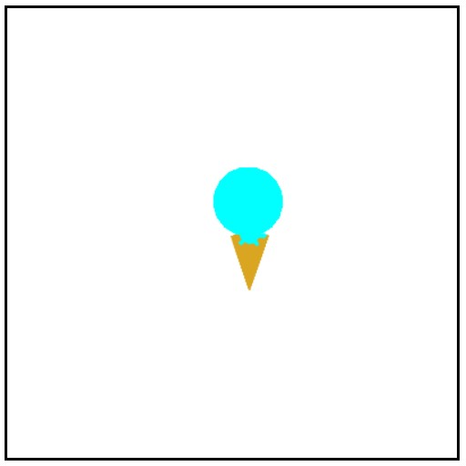
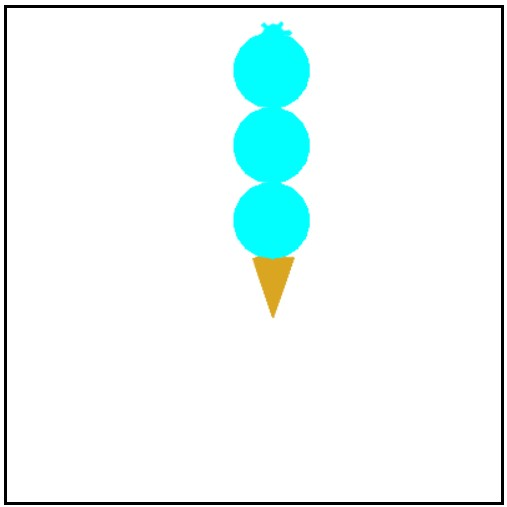
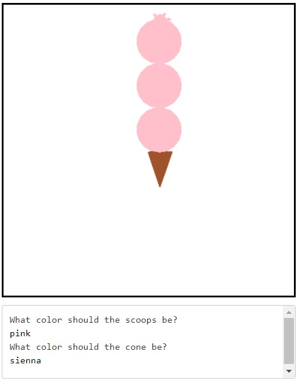
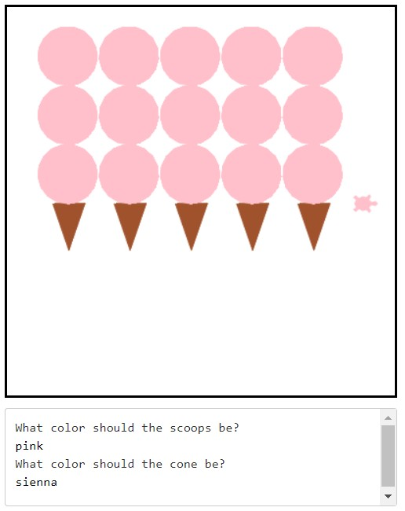
As always, we encourage students to try a handful of the challenge activities posted on CodeHS; they should be able to access their account and all associated Technovation materials from any internet-connected computer. If they'd like to review what we covered on Saturday, the slides can be found here, and a Tracy command cheat-sheet can be found here!
If your student is a high-schooler and is looking for further opportunities to develop their programming, problem-solving, collaboration and communication skills, we encourage them to consider signing up for Michigan State University's High School Programming Competition! The event will be hosted at the Michigan State College of Engineering next Saturday, November 2nd from 11:30am-4:30pm, and is designed to give students of all programming ability levels a fun challenge and an opportunity to grow. Students must register in teams of 3 − but if your student is interested and is unable to find teammates, reach out to technovation@cadl.org and we'll see if we can find them a team!
That's all for Week 5; we're already looking forward to Week 6!
See you next Saturday!
-The Technovation Team
Week 4 (10.19)
Fortifying the foundation
Students took this week to slow down and solidify their foundations by working through two mentor-led code-alongs emphasizing the fundamentals of loops and functions. As always, we were impressed by the diversity, creativity, and novelty of programs students produced!
After a quick warmup activity to get things started, students heard from Steph Curry who discussed the importance of learning computer science in this week's spotlight, linked below. Steph noted that careers in technology are "in high demand" and encouraged students to persevere through the challenge of learning to code because "anything that's worth doing usually doesn't come easily." Just as Steph has to practice to be one of the best basketball players in the NBA, it takes practice to hone one's programming skills!
Following this inspiring spotlight, Hannah led students through a code-along which reviewed functions, loops, and various artistic effects by creating a function to teach Tracy how to draw a shaded square with a single command − students then used this function to create tiles all across their canvas just as an abstract artist might!
Next, Zosha led students through the complex challenge of teaching Tracy to draw a flower by breaking the problem down into a sequence of simpler steps. First, students taught Tracy to draw a single petal; then, students used a loop to draw multiple petals. Next, students taught Tracy to draw a stem; finally, students instructed Tracy to fill the center of the flower as a finishing touch. The resulting creations were quite intricate!
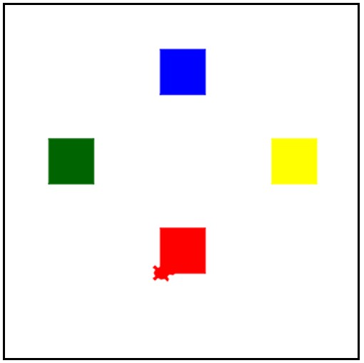

Although students didn't learn any new commands this week, we provided them with a "cheat sheet" to recap all they've learned over the past three weeks. The cheat sheet is linked here and under the resources tab above; moreover, Saturday's slides can be found here!
Although we didn't have time to get started on this week's exercises on CodeHS, we encourage students to give them a try from home at some point this week if they're able to; they should be able to access their CodeHS accounts and all associated Technovation materials from any internet-connected computer. Below are a few of the fun challenges in store!
With five weeks remaining, we've got plenty of fun left to cover − we hope your student is as excited as we are for what's to come!
See you next Saturday!
-The Technovation Team
Week 3 (10.12)
Getting func-y with it
This week, students learned to simplify their code by defining and calling functions − as a result, they were able to create impressively complex programs with only a few lines of code!
What's a function, exactly? Put simply, it's a programmer's shortcut, enabling one to execute multiple commands with a single line of code. By defining a function, a programmer can create a sub-routine which completes a specific sub-task, then call that function into service in order to complete a larger, more complex task. Just as loops help programmers eliminate repeated code, so do functions! Better yet, programmers can even combine loops with functions to save themselves a considerable amount of work!
Using functions, students were able to "teach" Tracy new commands, such as how to draw a square() or triangle(). In addition, students learned how to add pizazz to their programs by configuring Tracy's artistic settings, such as her color() and pensize(). Check out the following videos for a recap of all we covered this week!
Below is a review of the commands students learned at this week's class; the slides from Saturday can be found here!
By the end of the lesson, students were using the commands above to try their hands at the following challenges:

Last but certainly not least, this week's spotlight video highlighted the wide range of career possiblities within computer science and technology, from fashion to agriculture, medicine to energy, and from art to entertainment. The only limit in computer science is one's imagination!
As a reminder, students can access their CodeHS account and all associated Technovation materials from any internet-connected computer; as such, we encourage them to try a few of the challenge activities this week if they didn't have a chance to on Saturday!
It's crazy to believe we're already through Week 3, but time flies when you're having fun! We look forward to welcoming students back next week and watching them continue to grow as programmers, problem-solvers, and collaborators over the next six weeks.
See you next Saturday!
-The Technovation Team
Week 2 (10.5)
Extending the basics
After a long week away from the keyboard, students were eager to learn and brought their A-game; as such, we made incredible progress as a class and completed three modules in CodeHS:
Our spotlight video emphasized the importance of a growth mindset in the world of computer science, and students clearly embraced the message!
Week 2 primarily focused on solidifiying the foundation constructed in Week 1; students learned to turn Tracy with the left(number) and right(number) commands, control her speed with the speed(number) command, and move her from point to point using the setposition(x, y) command.
Students also learned to simplify and remove redundancy from their code by using for loops, which designate a certain number of commands to be repeated more than one time. Efficiency is a goal every programmer strives for, and writing loops in place of repeated commands enabled students to produce incredibly sophisticated drawings with only a few lines of code!
Below is a review of the commands students learned at this week's class; the slides from Saturday can be found here!
By the end of the lesson, students were using the commands above to write programs which produced the following graphics:
As a reminder, students can access their CodeHS account and all associated Technovation materials from any internet-connected computer; as such, we encourage them to try a few of the challenge activities this week if they didn't have a chance to on Saturday!
We're proud of our students' hard work the past two weeks, and look forward to seeing them continue to progress in Week 3!
See you next Saturday!
-The Technovation Team
Week 1 (9.28)
Welcome to Technovation!
Ready or not, we're off to the races!
Today, we welcomed the fall 2019 class of Technovators to our program and introduced the basics of Python and Tracy the Turtle with CodeHS, an online, interactive coding platform around which our curriculum is centered.
After a short "find someone who..." icebreaker to get things started, students filled out the Technovation Pre-Survey and configured their CodeHS accounts, enrolling in the fall 2019 section of Technovation on the platform. Students then watched an inspiring Spotlight video ("What Most Schools Don't Teach") courtesy of Code.org and discussed how programming skills can be a "hidden superpower" in the 21st century before stepping back and thinking about what programming really is.
The conclusion? Programming is what one makes of it − after all, programming is nothing more than giving a computer a set of directions to perform a task! Whether one chooses to instruct a computer to create an animation, compute the solutions to an equation, play a game against a human, or display information on a webpage is up to the computer scientist herself; with programming, one can accomplish anything she sets her mind to!
Finally, students dove into the basics of Python, a programming language which formalizes how a computer scientist can "talk" to a computer, and were introduced Tracy the Turtle, a module within Python which draws the output of a user's program. Students watched Introduction to Tracy and Tracy's Grid World to familiarize themselves with the fundamentals, then attempted a handful of challenge activities to solidify their grasp on the material. Below is a review of the commands students learned at this week's class; the slides from Saturday can be found here!
By the end of the lesson, students were using the commands above to write programs which produced the following graphics:

As a reminder, students can access their CodeHS account and all associated Technovation materials from any internet-connected computer; as such, we encourage them to try a few of the challenge activities this week if they didn't have a chance to on Saturday!
We're thrilled to have seen such excitement and engagement at our first week, and look forward to the eight weeks ahead of us where students will continue to develop as problem-solvers and 21st-century leaders by learning to code.
See you next Saturday!
-The Technovation Team